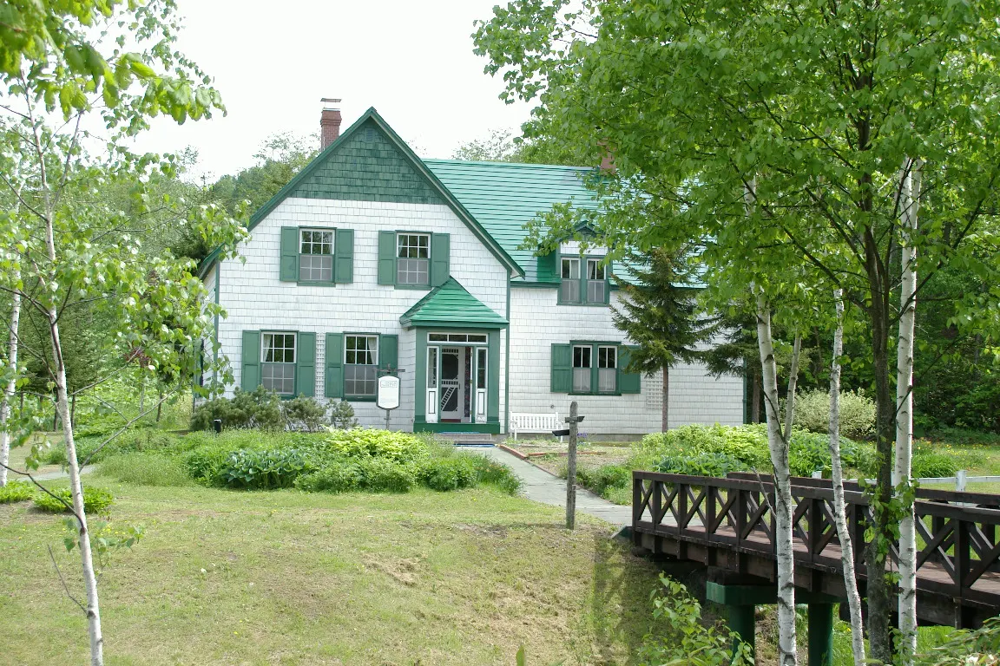
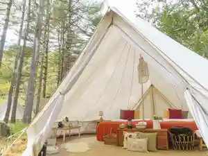
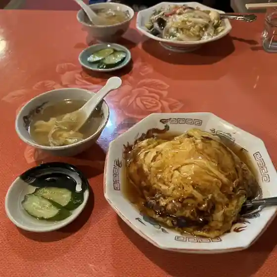
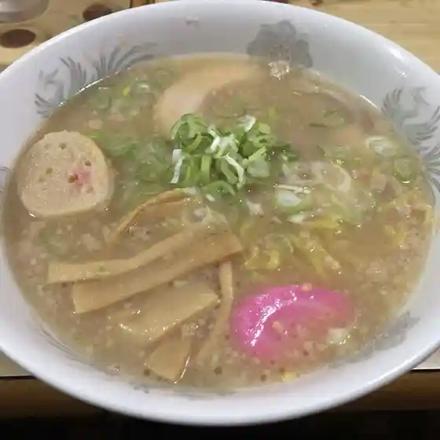
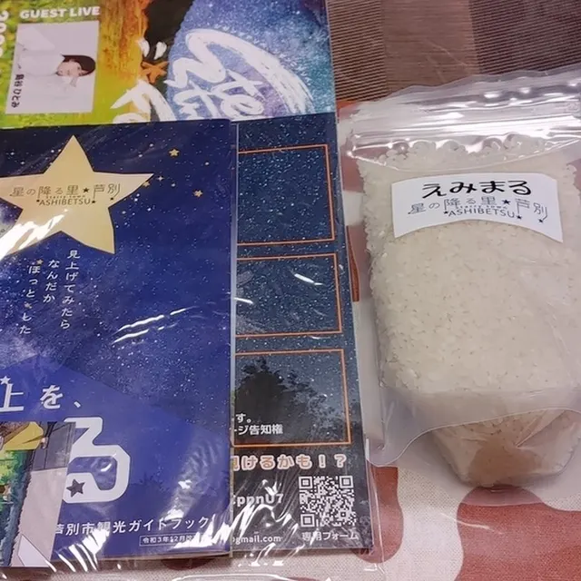
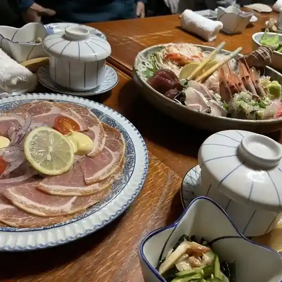
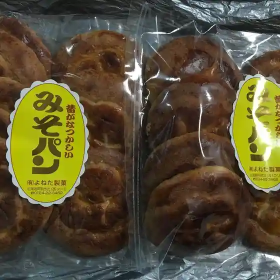
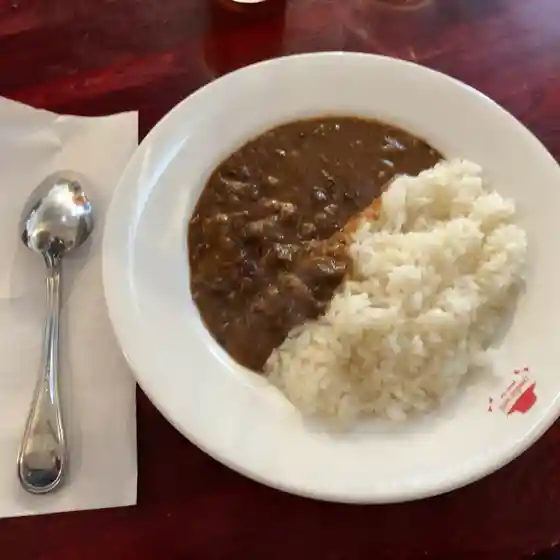
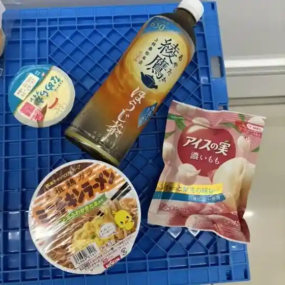

Ashibetsu
Ashibetsu · Hokkaido
Ashibetsu
Highlighted on the Hokkaido map.

Stay
ザランタン芦別

Zarantan Ashi Betsu
芦別温泉スターライトホテル＆おふろcafe星遊館
Ashi Betsu Onsen Sutaaraitohoteru & Ofuro Cafe Hoshi Yuu Kan
Dining
宝華飯店

Houka Hanten
かめや製菓

Kameya Seika
わらべ

Warabe
民泊 貞子の家

Minpaku Sadako No Ie
かくれんぼ

Kakurenbo
よねた製菓

Yoneta Seika
本革家具と軽食の店 ミックマック

Honkawa Kagu To Keishoku No Mise Mikkumakku
セブンイレブン 芦別中央店

Sebun'Irebun Ashi Betsu Chuuou Mise
お食事処玉ちゃん
O Shokuji Tokoro Tama Chan
友歩嶺
Tomo Ho Mine
旭川ラーメン 渓水店
Asahikawa Raamen Keisui Mise
つぼ八 芦別店
Tsubo Hachi Ashi Betsu Mise
あした山荘
Ashita Sansou
ひる川
Hiru Kawa
居酒屋梅村
Izakaya Umemura
epis-chiffoncake
Epis-Chiffoncake
スターライトホテル
Sutaaraitohoteru
ひさご
Hisago
喫茶獏
Kissa Baku
COCONUT
Coconut
グリーンペペ
Guriinpepe
カフェレスト キタキツネ
Kaferesuto Kitakitsune
秋田屋旅館
Akita Ya Ryokan
ひだまり
Hidamari